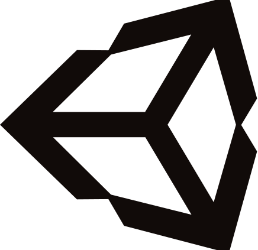

Programming Experience
- Proficient in C++ (mostly 17).
- Decent in C and C#.
- Experienced in coding in the Visual Studio environment.
- Experienced in using GitHub for team integration.
- Experienced in coding game engines.
- Familiar with 2D Graphics using OpenGL API.
- Novice in HTML, CSS, and Javascripting (Picked it up just for this website!).
You can check out my repositories at my GitHub profile.
Design Experience
- 2D game design and gamplay scripting using Unity.
- Created functional UI prototypes using Unity.
- 3D game design and gameplay scripting using Unreal Engine.
- Created UI assets and done photobashing for UI mockups using Adobe Photoshop.
- Used Adobe Premier Pro for video editing and sound mixing.
- Familiar with Musescore and Mixcraft for music composition.
- Sound Design for Short Films.
As an undergraduate studying in Digipen's Computer Science and Game Design course (as of 2020), a lot of projects are from my classes and the game projects I took. I have write-ups to discuss the things I have done for each project as best I can since I might not be able to share all of my work in full due to some restrictions. You can find them under the PROJECTS tab.
A hat lover (seriously, it's my most distinctive feature, check my icon!).
An avid gamer who still believes that games are an exellent medium for people to experience emotions and things that they might not normally have the opportunity to experience. Also a code junky! I love seeing the little characters I type on screen do something, and even better, when they become something useful for others to use. Nothing gives me greater joy than when someone tells me that something I made helped them out.
With that in mind, imagine my joy when I realised that Digipen had a course about Computer Science and Game Design? Needless to say, I ended up enrolling and it had since given me the opportunity to work on custom game engines as well as participate in the design process of game development from its conception to fruition (with the side helping possible depression but I'm working on it).
Through my study, I realised that I'm quick at understanding logic, patterns, and structures. This has helped me a lot when it comes to meta-programming, system architectures, and organisation. However, I have also learnt that my achilles heels is that I'm slow to understand math and physics concepts.